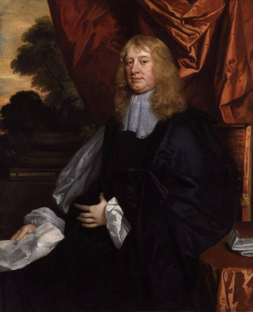

Abraham Cowley (1618-1667) was one of the leading English poets of the 17th century, with 14 printings of his Works published between 1668 and 1721. He forms the first biography of Johnson’s great collection of Lives.